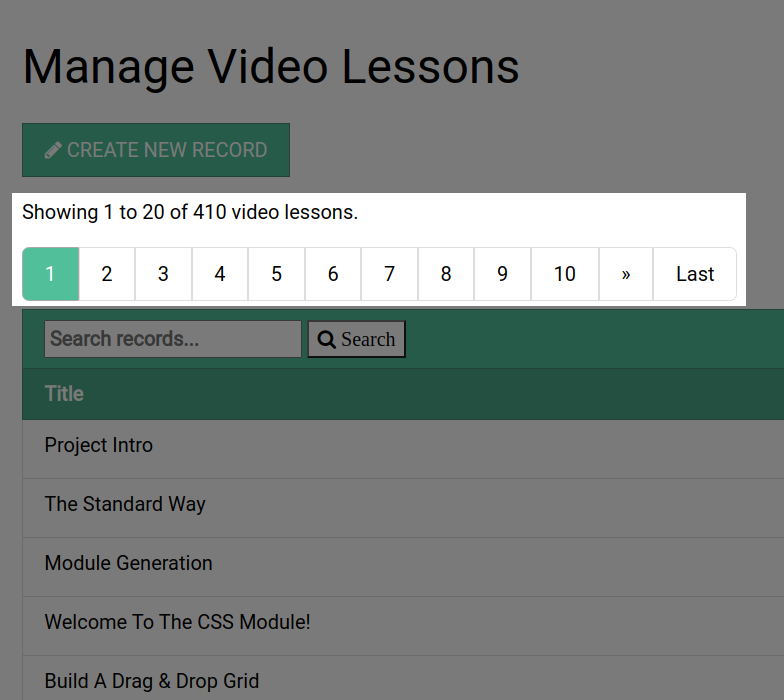
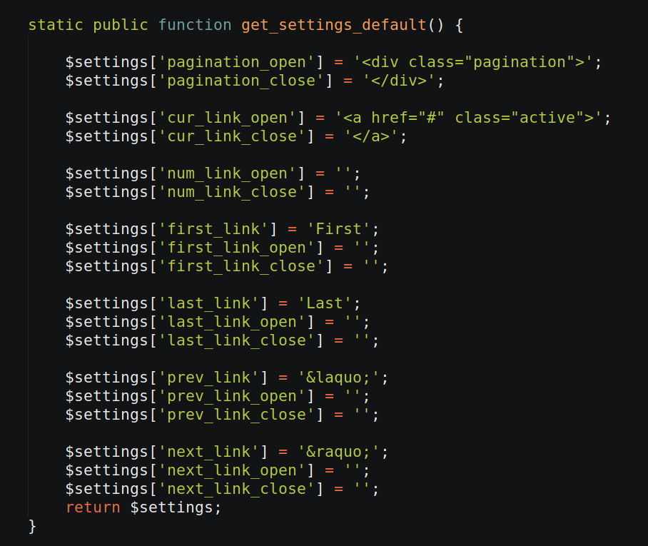

The Trongate framework comes with a built-in pagination helper to assist developers in producing numbered links in instances where multiple pages of the same type are available. Below is a screenshot, taken from a Trongate web app, indicating the kind of results that you can expect to see from Trongate's pagination helper.

All of the main helpers that come with the Trongate framework are ready to use immediately. The pagination helper can be activated by going through the following three-step process:
BUILDING PAGINATION DATA
Below is an example of some PHP code that builds an array of useable pagination data:
$pagination_data["total_rows"] = count($rows);
$pagination_data["page_num_segment"] = 3;
$pagination_data["limit"] = 10;
$pagination_data["pagination_root"] = "books/manage";
$pagination_data["include_showing_statement"] = true;
$pagination_data["record_name_plural"] = "books";
$data["pagination_data"] = $pagination_data;
As you can see, the pagination helper does not have to interact with the database. It merely accepts some information relating to a pre-defined database results set. In the code above, we begin by passing in the total number of rows from our available results. Here's we're assuming an PHP array called $rows and we're using PHP's count() method to establish the total number of rows:
$pagination_data["total_rows"] = count($rows);
Next, we declare a page_num_segment property. This should be an integer representing the URL segment number from which the 'current page number' should be fetched. For example, here we are declaring that the 'current page' should be read from the third URL segment:
$pagination_data["page_num_segment"] = 3;
Then, we declare a limit property. The limit should be an integer that represents the maximum number of results that you'd like to have displayed on a page.
$pagination_data["limit"] = 10;Another important property is the pagination_root. This property represents the URL segments that should be considered as a start point for viewing results. Below we declare a first segment of 'books' and a second segment of 'manage'.
$pagination_data["pagination_root"] = "books/manage";Next, we have an include_showing_statement property. A 'showing statement' is a short sentence that usually takes the form:
"Showing x to y of z"
Showing statements are optional. If you'd like to have a showing statement, pass in an 'include_showing_statement' value of true. If you do not want to have a showing statement, pass in a value of false. In the example below, we are declaring that the would like to have a showing statement:
$pagination_data["including_showing_statement"] = true;If you decide to have a showing statement, then it's a good idea to declare a record_name_plural property. The 'record_name_plural' property should be a word or phrase that represents the plural of your record type. Having a declaration of the plural helps the Trongate framework to generate more meaningful showing statements. In the example book, we declare that the plural for our records is, 'books':
$pagination_data["record_name_plural"] = "books";
$pagination_data["include_css"] = true;
$pagination_data["num_links_per_page"] = 10;Below, shows a full example of a PHP method where an array of pagination data has been declared and passed into a view file:
function manage() {
$data["headline"] = "Manage Books";
$all_rows = $this->model->get("book_title");
$pagination_data["total_rows"] = count($all_rows);
$pagination_data["page_num_segment"] = 3;
$pagination_data["limit"] = $this->_get_limit();
$pagination_data["pagination_root"] = "books/manage";
$pagination_data["record_name_plural"] = "books";
$pagination_data["include_showing_statement"] = true;
$data["pagination_data"] = $pagination_data;
$data["rows"] = $this->_reduce_rows($all_rows);
$data["view_module"] = "books";
$data["view_file"] = "manage";
$this->template("admin", $data);
}
Having passed pagination data from a controller into a view file, you can then activate pagination by invoking the display() method of Trongate's pagination class. This can be achieved by adding the following line of PHP code onto your target view file:
Pagination::display($pagination_data);There is one final property that may be passed into an array of pagination data. This is the template property. This feature is recommended only for exceptional circumstances where may require alternative HTML syntax to that which has been provided by the default paginator.
To understand how the template property works, consider the following method - which is an extract from the Trongate pagination class:

Even without understanding every line of code, hopefully, you can appreciate that the method above is building up some settings that will enable the framework to draw some pagination links. This method happens to be called get_settings_default() and it gets automatically invoked whenever you call Trongate's pagination helper.
However, let's assume that you have your own ideas about the kind of HTML code that gets produced whenever Trongate generates pagination. For example, let's assume that you'd like 'next' buttons to have the word 'next' and previous buttons to have the word 'prev'. This could be declared as a part of your own custom pagination template. So, the process for achieving this would be to build a pagination template method of your own and give it a name - for example, 'custom'.
With that being the case, you could then add your own static method onto the pagination class. For example:
static public function get_settings_custom() {
...
Then, you could simply copy and paste the contents from the default settings methods, but substitute your own ideas as required. For example:
$settings["prev_link"] = "prev";
$settings["prev_link_open"] = "";
$settings["prev_link_close"] = "";
$settings["next_link"] = "next;";
$settings["next_link_open"] = "";
$settings["next_link_close"] = "";
To activate your pagination template, you would then pass in a template property:
$pagination_data["template"] = "custom";